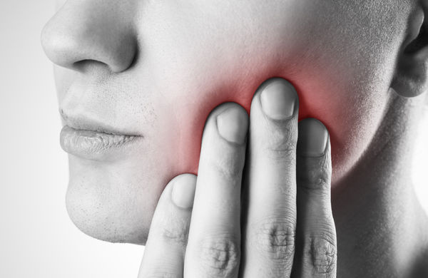
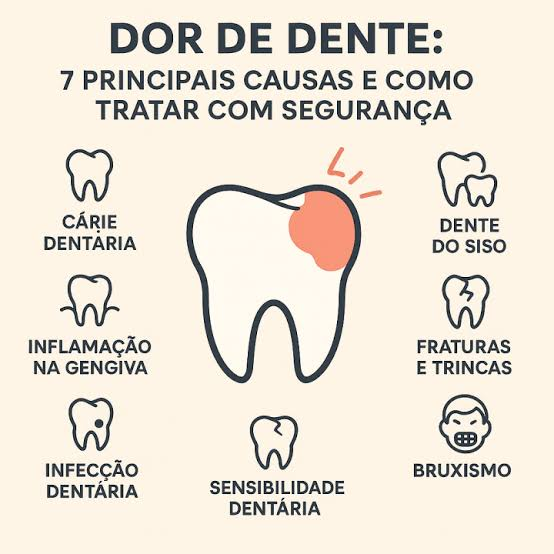

Emergência Odontológica · Blog
A dor de dente pode aparecer de repente e atrapalhar atividades simples do dia a dia. Entenda as causas mais comuns, como aliviar o desconforto e quando procurar um dentista.
Agendar avaliaçãoEntenda o sintoma
A dor de dente pode aparecer de repente e atrapalhar atividades simples do dia a dia, como comer, dormir e até falar. Embora algumas medidas possam ajudar a aliviar o desconforto temporariamente, é importante entender que a dor geralmente é um sinal de que existe algum problema que precisa ser avaliado por um dentista.
Principais causas

Principais causas da dor de dente
Diversas situações podem provocar dor ou sensibilidade nos dentes. Entre as causas mais comuns estão:
Por isso, identificar a causa é fundamental para escolher o tratamento adequado.
Alívio temporário
Enquanto aguarda uma avaliação odontológica, algumas medidas podem ajudar a reduzir o desconforto:
Faça uma boa higiene bucal
Escove os dentes cuidadosamente e use fio dental para remover restos de alimentos que possam estar presos entre os dentes.
Enxágue a boca com água
Um enxágue suave pode ajudar a manter a região limpa.
Evite alimentos que aumentam o desconforto
Alimentos muito quentes, frios, doces ou duros podem aumentar a sensibilidade e piorar a dor.
Faça uma compressa fria por fora da face
Em alguns casos, o frio pode ajudar a diminuir temporariamente a dor e o inchaço.
Atenção: não coloque substâncias diretamente no dente ou na gengiva. Receitas caseiras podem irritar os tecidos e agravar o problema.
Dúvida comum
Analgésicos podem aliviar temporariamente a dor, mas não tratam a causa do problema. O uso de medicamentos deve respeitar as orientações da bula e, quando houver dúvidas, de um profissional de saúde.
Também é importante não tomar antibióticos por conta própria. Antibióticos não são indicados para todos os casos de dor de dente e devem ser utilizados somente quando prescritos por um profissional.
Sinais de alerta
O ideal é procurar um dentista sempre que a dor persistir, voltar com frequência ou estiver acompanhada de outros sintomas. O atendimento é especialmente importante quando há:
Atendimento de urgência: em situações com dificuldade para respirar ou engolir, especialmente quando existe inchaço importante, procure atendimento de urgência imediatamente.
Fique atento
Mesmo que a dor desapareça depois de algumas horas ou dias, isso não significa necessariamente que o problema foi resolvido. Algumas condições podem continuar evoluindo sem causar sintomas intensos.
Por isso, a melhor maneira de descobrir o que está causando a dor de dente é realizar uma avaliação com um dentista. Quanto mais cedo o problema for identificado, maiores são as chances de realizar um tratamento adequado e evitar complicações.
Está sentindo dor de dente? Não espere o desconforto piorar. Agende uma avaliação com a Dra. Morgane Marion e descubra a causa do problema.
Falar no WhatsApp →Dúvidas frequentes
O que pode causar dor de dente?
Cáries, inflamação ou infecção da polpa do dente, gengivite, dente quebrado ou trincado, sensibilidade dentária, nascimento do siso e traumas na região da boca estão entre as causas mais comuns. Identificar a causa é fundamental para escolher o tratamento adequado.
O que fazer para aliviar a dor de dente?
Faça uma boa higiene bucal com escovação cuidadosa e fio dental, enxágue a boca com água, evite alimentos muito quentes, frios, doces ou duros e faça uma compressa fria por fora da face. Não coloque substâncias diretamente no dente ou na gengiva.
Posso tomar remédio para dor de dente?
Analgésicos podem aliviar temporariamente a dor, mas não tratam a causa. O uso deve seguir a bula e a orientação de um profissional de saúde. Antibióticos não devem ser tomados por conta própria.
Quando devo procurar um dentista para dor de dente?
Sempre que a dor persistir, voltar com frequência ou vier acompanhada de inchaço, febre, pus ou dificuldade para abrir a boca. Em caso de dificuldade para respirar ou engolir com inchaço importante, procure atendimento de urgência imediatamente.
Se a dor de dente passar sozinha, o problema foi resolvido?
Não necessariamente. Algumas condições podem continuar evoluindo sem causar sintomas intensos, mesmo que a dor desapareça. A avaliação com um dentista é a melhor forma de identificar a causa.
Em resumo
Mantenha a higiene bucal, evite alimentos que aumentem o desconforto, não faça automedicação e procure avaliação odontológica. O alívio temporário da dor não substitui o tratamento da causa.